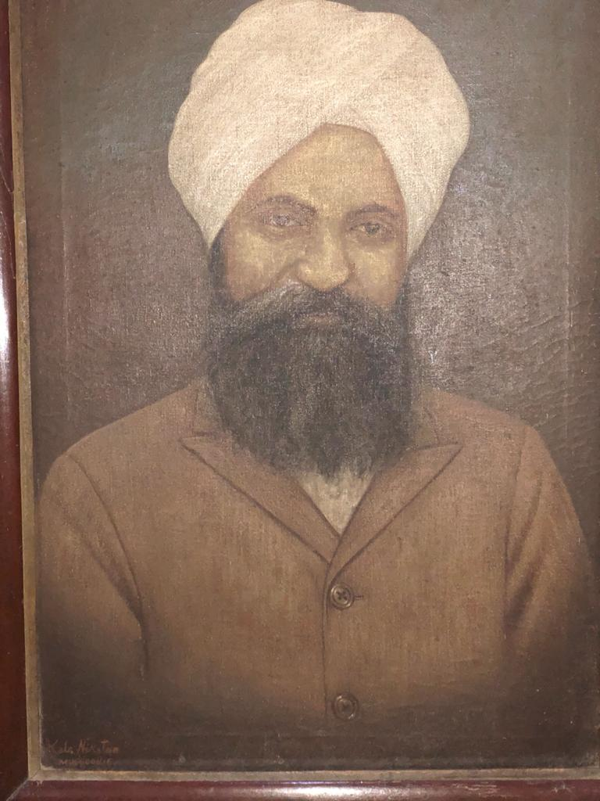

Welcome to our Family Tree!
Hi, My name is Priya and I wanted to share a little bit about our family. Like any other family, our family is unique in its own ways. There are challenges, accomplishments, traditions, and family heroes, just like any other family. I was inspired to read about my great grandfather, and as I learnt more about our family history, I am so proud to be a part of this family. With the help from my dad, Kawaljit Singh Bhasin and Uncle Surjit Singh & Uncle Manjit Singh, we have curated a family tree representing 6 generations with a total of 178 members (including the new ones added after marriage). I hope there will be many more generations to come and we can use this document as a living proof and remind ourselves of who we are. I know I am excited to connect with you all someday. If you are excited connect with each other, please share your information https://forms.gle/bkngcnmoxb25bbVA8. You can play with the collapsible tree below.
Our family originated from Pakistan, with the birth of my great grandfather Teja Singh. He was a noted Sikh preacher and social reformer, was the son of Bhai Lakhmi Das, born in the village of Maingan in Jehlum district, now in Pakistan. Observing crippling bigotry fostered within his community inspired him to adopt Sikhism, a religion that promotes equality and service to others. He then traveled throughout India to curb discrimination, which later earned him the honorable title of Hazooria, the Grand Master from the Indian government for his efforts. You can read more about him https://www.sikhiwiki.org/index.php/Bhai_Teja_Singh_Hazuria.
